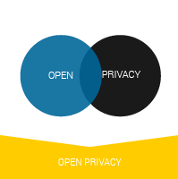
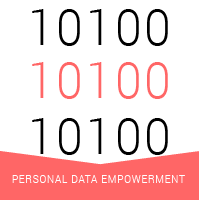

I explore issues arising at the intersection of openness and privacy, identifying the tensions between them, and how they can be mutually reinforcing.

I research the emerging landscape of personal data empowerment; organisations, tools and initiatives that enable people to control and benefit from their own data.